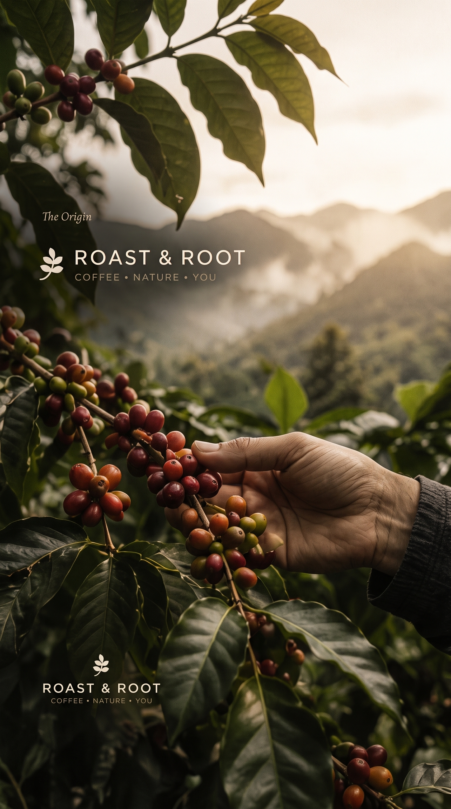
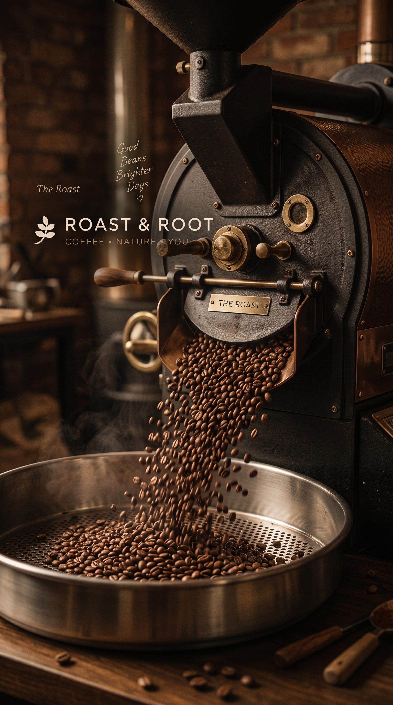
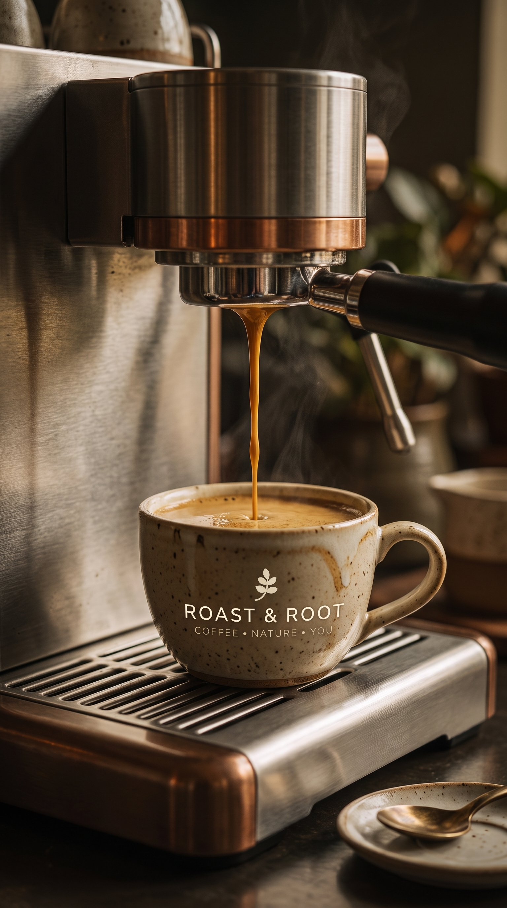
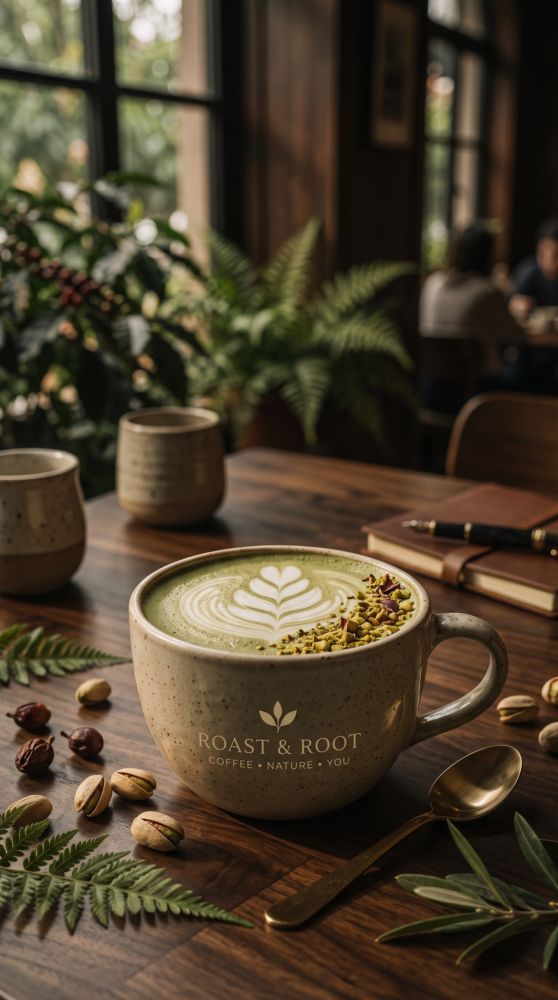
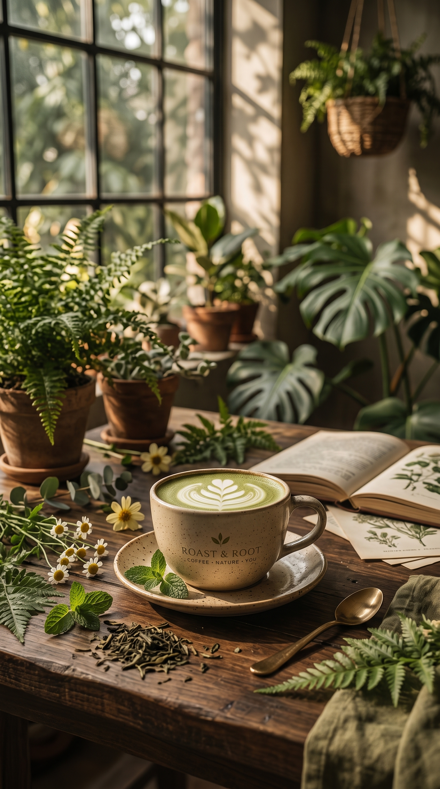
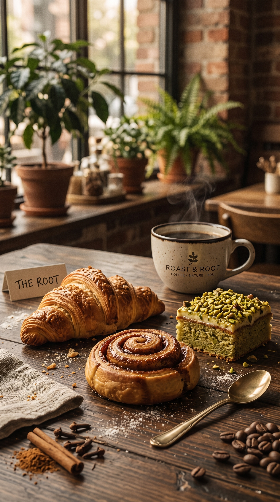
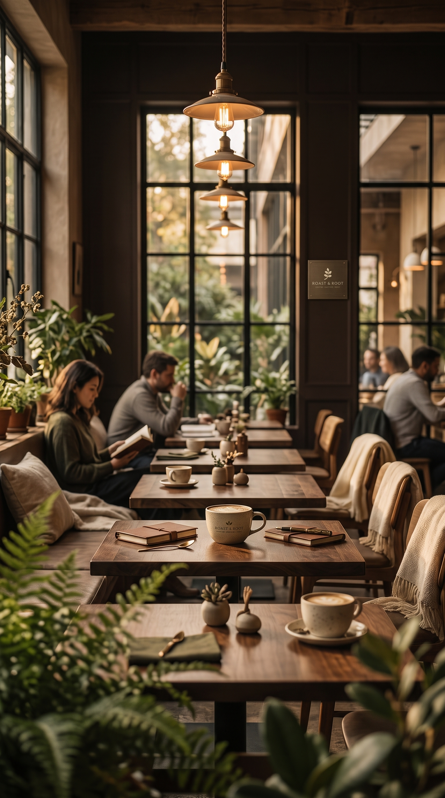
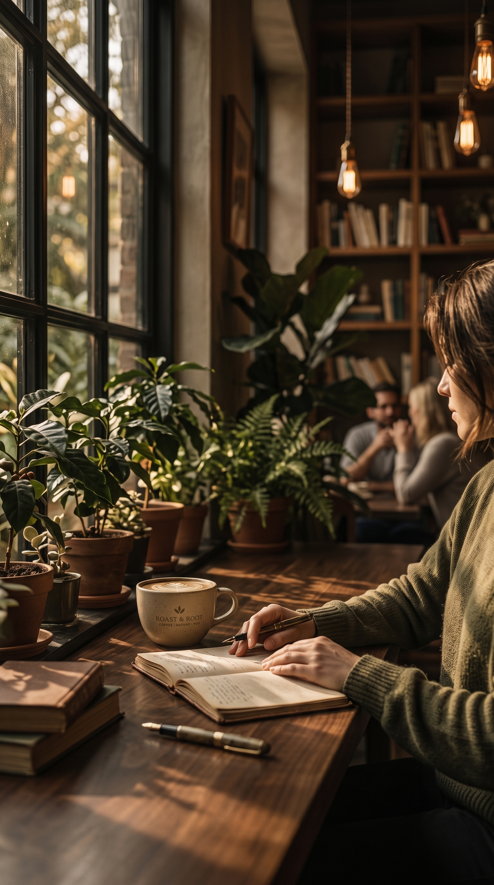

VISUAL JOURNEY
A Glimpse Into Our World.
Where every cup has a story — from mountain soils to quiet moments.

Highland Harvest
Hand-picked heirloom cherries from high-altitude slopes.

The Artisan Roaster
Precision heat unlocking deep aromas and character.

Golden Extraction
The perfect pull with velvety golden crema.

Rooted Latte
Signature espresso with pistachio, vanilla, and creamy milk.

Matcha Garden
Pure ceremonial matcha balanced with oat milk and botanicals.

Morning Bakes
Flaky croissants and daily pastries fresh from our oven.

Sanctuary in the City
Warm timber, soft sunlight, and lush green plants.

Quiet Reflections
Slow mornings, honest thoughts, and warm sips.